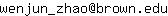

Wenjun Zhao
 |
LFZ Assistant Professor |
Contact
182 George Street, Room 219, Providence, RI 02906
Email: 
About me
I am an LFZ Assistant Professor of Applied Mathematics at Brown University, and currently I work with Professor Björn Sandstede. Prior to Brown, I received a B.Sc. degree from the University of Science and Technology of China in 2016, and a Ph.D. from the Courant Institute of Mathematical Sciences, New York University in 2021. My PhD advisor is Professor Esteban G. Tabak.
My research interests include optimal transport and its applications in statistics, computational biology, and scientific machine learning.
Besides research, I am passionate about teaching and outreach activities. I am honored to receive the Dean's Award for Excellence in Teaching from Brown.